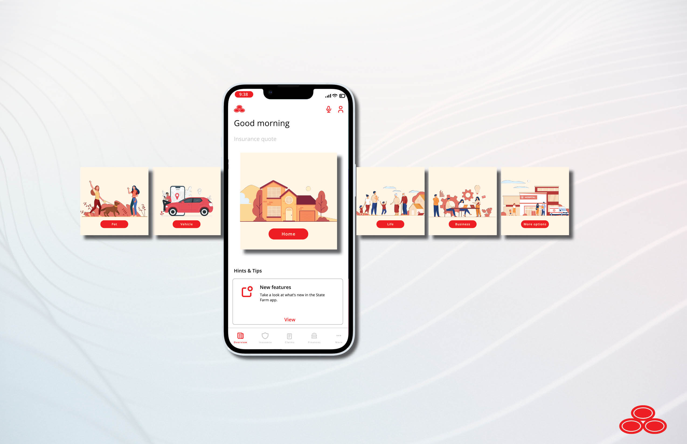
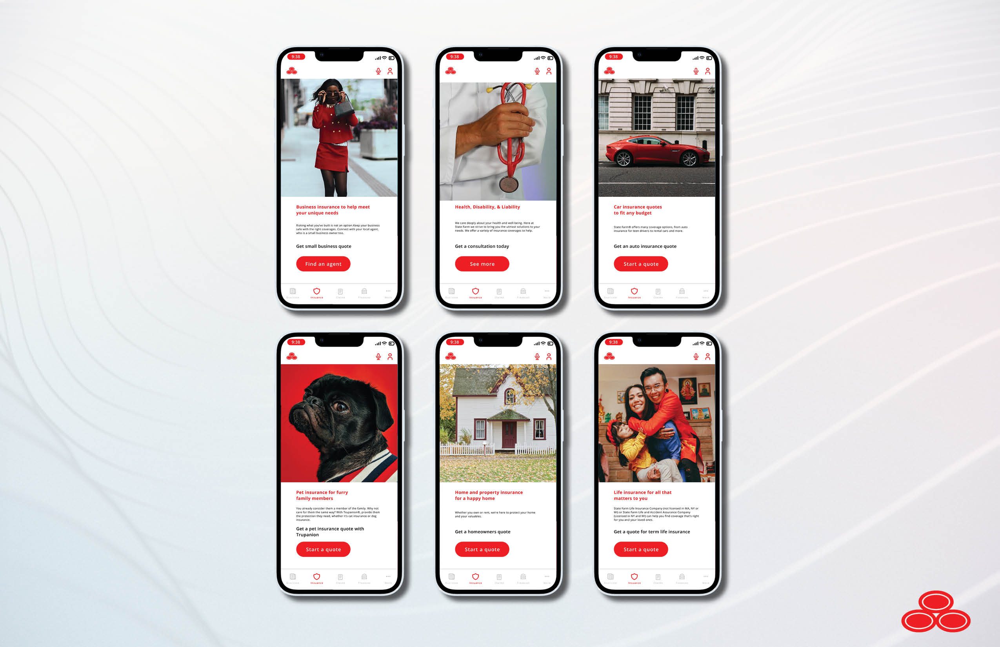

Project Overview
LinkedIn is the world's largest professional networking platform, connecting millions of professionals worldwide. It serves as a crucial platform for communication, networking, and job seeking. However, with the growing volume of messages received by users, responding to every message becomes challenging. To enhance user experience and streamline communication, LinkedIn is seeking to introduce an AI-powered feature that can auto-generate responses to messages sent to users.
Problem Statement
LinkedIn faces a pressing challenge in the form of growing message volumes and the time and effort required for users to respond to messages effectively. This presents an obstacle to user engagement and efficient communication on the platform, ultimately hindering LinkedIn's mission to foster meaningful professional connections. To address this issue, LinkedIn aims to develop an AI-powered message response feature that automates response generation while maintaining a personalized touch, thus enhancing user experience, increasing engagement, and alleviating the burden on users to craft individual responses to a high volume of messages.
Project Goals
- Improve Message Response Efficiency: Enhance the user experience by reducing the time and effort required for responding to messages on LinkedIn.
- Boost User Engagement and Interaction: Encourage users to engage in more meaningful conversations and interactions on the platform.
- Enhance Personalization and User Satisfaction: Ensure that AI-generated responses maintain a personalized touch, reflecting each user's communication style and preferences.
User Research
User Persona
Career-Driven Professional (Ana):
- Demographics: 30-45 years old, Urban professional, holds a marketing role in a tech company, resides in San Francisco.
- Goals: Aims to efficiently manage her LinkedIn messages while maintaining a professional and approachable image. She wants to expand her network and establish herself as an industry thought leader.
Recent College Graduate (Alex):
- Demographics: 20-30 years old, looking to break into Information Systemes, graduated with bachelors.
- Goals: Respond to messsages promptly and proffesionally in hopes of securing a job offer.
User Research Findings
During the user research phase of the LinkedIn case study, we gathered valuable insights from a diverse group of LinkedIn users. We found that users frequently experience challenges in managing their message responses due to the high volume of incoming communications. Respondents expressed a desire for more efficient and timely interactions, especially in the context of job-related conversations. Additionally, we identified that personalization and the ability to maintain a human touch in their messages were paramount concerns for users. Many emphasized the importance of conveying their unique professional identity while using the platform. These findings underscore the need for an AI-powered message response feature that not only streamlines communication but also preserves the personalized nature of interactions, ultimately enhancing the user experience and satisfaction on LinkedIn.
Design Approach
Key Features of the Showcase Feature
- Visually appealing cards for each insurance product, highlighting key features.
- Interactive Visuals: Infographics and videos explaining insurance concepts and benefits.
- Get a quote:Easy access to State Farm agents for a personalized quote.
Wireframes and Prototype


Key Metrics for Success
- Engagement Rate: Measure the number of users interacting with the showcase feature.
- Conversion Rate: Track the percentage of users who explore and purchase insurance coverage.
- User Feedback: Gather and analyze user feedback to make necessary improvements.
Conclusion
The State Farm Insurance Coverage Showcase feature aims to create an enhanced user experience, enabling users to easily explore, understand, and purchase insurance coverage. By addressing the problem of limited product discovery and engagement, we intend to boost user satisfaction and State Farm's revenue streams. This case study will be updated with the results and outcomes of the project following the launch.